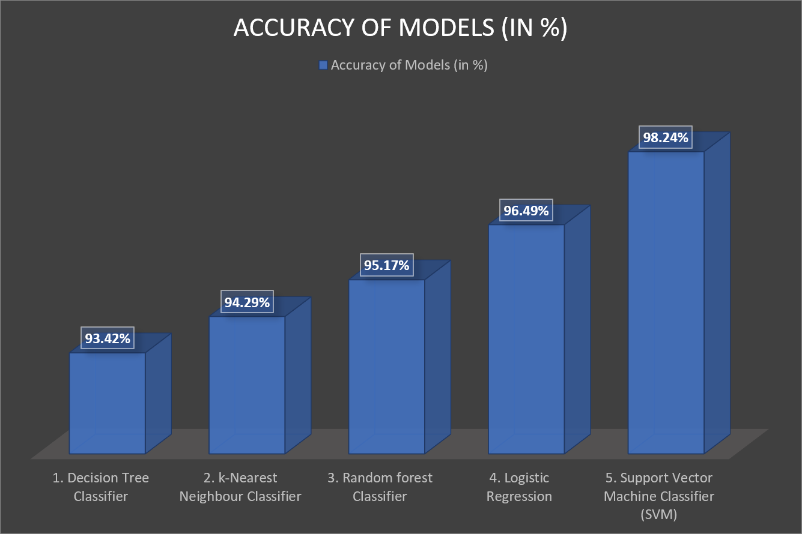

We have applied different types of classification algorithms in Machine Learning :-
1. Logistic Regression
2. Decision tree Classifier
3. Random forest Classifier
4. k-Nearest Neighbour Classifier
5. Support Vector Machine Classifier
RESULT
After applying the different classification models, we have got below accuracies with different models:
1. Logistic Regression - 96.49%
2. Decision tree Classifier - 93.42%
3. Random forest Classifier - 95.17%%
4. k-Nearest Neighbour Classifier - 94.29%
5. Support Vector Machine Classifier - 98.24%

Conclusion:
So finally we have built our classification model and we can see that Random Forest Classification algorithm gives the best results for our dataset. Well its not always applicable to every dataset. To choose our model we always need to analyze our dataset and then apply our machine learning model.
Thoughts
Thinking’.
Life’s battles don’t always go To the stronger or faster man; But sooner or later the person who wins Is the one who thinks he can!